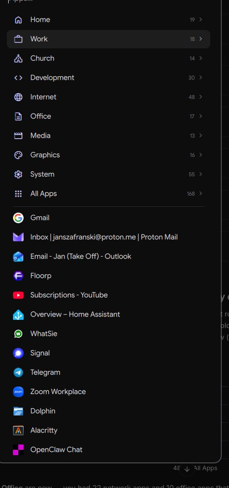

An Omarchy-style, categorised application launcher that opens on Super + Space. Browse your apps by category or just start typing the name and press Enter.
Super + Spacegit clone https://github.com/janszafranski/desktop-manager.git ~/system-replica
~/system-replica/profiles/omarchy-launcher/install.shPrefer clicking? Everything here also installs from Desktop Manager › Apps. Each tool has an uninstall.sh beside its installer.
Source: https://github.com/janszafranski/desktop-manager/tree/master/profiles/omarchy-launcher